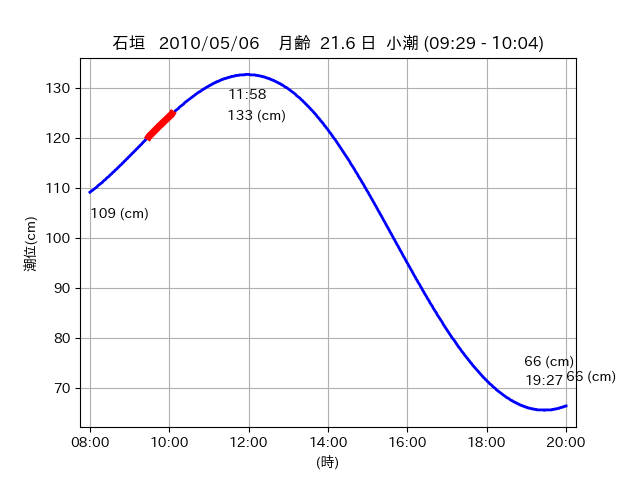

<!DOCTYPE html>
<html>
<head>
    
    <meta http-equiv="content-type" content="text/html; charset=UTF-8" />
    
        <script>
            L_NO_TOUCH = false;
            L_DISABLE_3D = false;
        </script>
    
    <style>html, body {width: 100%;height: 100%;margin: 0;padding: 0;}</style>
    <style>#map {position:absolute;top:0;bottom:0;right:0;left:0;}</style>
    <script src="https://cdn.jsdelivr.net/npm/leaflet@1.9.3/dist/leaflet.js"></script>
    <script src="https://code.jquery.com/jquery-3.7.1.min.js"></script>
    <script src="https://cdn.jsdelivr.net/npm/bootstrap@5.2.2/dist/js/bootstrap.bundle.min.js"></script>
    <script src="https://cdnjs.cloudflare.com/ajax/libs/Leaflet.awesome-markers/2.0.2/leaflet.awesome-markers.js"></script>
    <link rel="stylesheet" href="https://cdn.jsdelivr.net/npm/leaflet@1.9.3/dist/leaflet.css"/>
    <link rel="stylesheet" href="https://cdn.jsdelivr.net/npm/bootstrap@5.2.2/dist/css/bootstrap.min.css"/>
    <link rel="stylesheet" href="https://netdna.bootstrapcdn.com/bootstrap/3.0.0/css/bootstrap-glyphicons.css"/>
    <link rel="stylesheet" href="https://cdn.jsdelivr.net/npm/@fortawesome/fontawesome-free@6.2.0/css/all.min.css"/>
    <link rel="stylesheet" href="https://cdnjs.cloudflare.com/ajax/libs/Leaflet.awesome-markers/2.0.2/leaflet.awesome-markers.css"/>
    <link rel="stylesheet" href="https://cdn.jsdelivr.net/gh/python-visualization/folium/folium/templates/leaflet.awesome.rotate.min.css"/>
    
            <meta name="viewport" content="width=device-width,
                initial-scale=1.0, maximum-scale=1.0, user-scalable=no" />
            <style>
                #map_4417ba1843bd82b003f8a456145dc773 {
                    position: relative;
                    width: 2048.0px;
                    height: 1600.0px;
                    left: 0.0%;
                    top: 0.0%;
                }
                .leaflet-container { font-size: 1rem; }
            </style>
        
</head>
<body>
    
    
            <div class="folium-map" id="map_4417ba1843bd82b003f8a456145dc773" ></div>
        
</body>
<script>
    
    
            var map_4417ba1843bd82b003f8a456145dc773 = L.map(
                "map_4417ba1843bd82b003f8a456145dc773",
                {
                    center: [24.365, 123.961],
                    crs: L.CRS.EPSG3857,
                    ...{
  "zoom": 12,
  "zoomControl": true,
  "preferCanvas": false,
}

                }
            );

            

        
    
            var tile_layer_d8356ca7f27cd575dec1f9a9c31df05c = L.tileLayer(
                "https://cyberjapandata.gsi.go.jp/xyz/seamlessphoto/{z}/{x}/{y}.jpg",
                {
  "minZoom": 0,
  "maxZoom": 18,
  "maxNativeZoom": 18,
  "noWrap": false,
  "attribution": "\u5730\u7406\u9662\u5730\u56f3",
  "subdomains": "abc",
  "detectRetina": false,
  "tms": false,
  "opacity": 1,
}

            );
        
    
            tile_layer_d8356ca7f27cd575dec1f9a9c31df05c.addTo(map_4417ba1843bd82b003f8a456145dc773);
        
    
            var marker_f89ed9ce6a310b6283d4dc03d8bff731 = L.marker(
                [24.3673, 123.9556],
                {
}
            ).addTo(map_4417ba1843bd82b003f8a456145dc773);
        
    
            var icon_e9cf2358cf1f44c2c3045ee626b09418 = L.AwesomeMarkers.icon(
                {
  "markerColor": "orange",
  "iconColor": "white",
  "icon": "info-sign",
  "prefix": "glyphicon",
  "extraClasses": "fa-rotate-0",
}
            );
        
    
        var popup_b4fa6c21bccc9aa737d73e936053379c = L.popup({
  "maxWidth": "100%",
});

        
            
                var html_db797d1ef2e4198f34602a515dcf59f1 = $(`<div id="html_db797d1ef2e4198f34602a515dcf59f1" style="width: 100.0%; height: 100.0%;"><table><tr><td></td></tr><tr><td><center>20100506 No.1 </center></table></td></tr></table</div>`)[0];
                popup_b4fa6c21bccc9aa737d73e936053379c.setContent(html_db797d1ef2e4198f34602a515dcf59f1);
            
        

        marker_f89ed9ce6a310b6283d4dc03d8bff731.bindPopup(popup_b4fa6c21bccc9aa737d73e936053379c)
        ;

        
    
    
                marker_f89ed9ce6a310b6283d4dc03d8bff731.setIcon(icon_e9cf2358cf1f44c2c3045ee626b09418);
            
    
            var poly_line_ddfb53c513f1c30da90b7a675d3d6566 = L.polyline(
                [[24.3673, 123.9556], [24.3688, 123.9557]],
                {"bubblingMouseEvents": true, "color": "#FF00FF", "dashArray": null, "dashOffset": null, "fill": false, "fillColor": "#FF00FF", "fillOpacity": 0.2, "fillRule": "evenodd", "lineCap": "round", "lineJoin": "round", "noClip": false, "opacity": 1.0, "smoothFactor": 1.0, "stroke": true, "weight": 3}
            ).addTo(map_4417ba1843bd82b003f8a456145dc773);
        
    
            var marker_22e452b739b5f56dee8a809ee7d8d96f = L.marker(
                [24.3657, 123.9608],
                {
}
            ).addTo(map_4417ba1843bd82b003f8a456145dc773);
        
    
            var icon_64e83bcbaa970fd5d2a2aacb12e9676e = L.AwesomeMarkers.icon(
                {
  "markerColor": "orange",
  "iconColor": "white",
  "icon": "info-sign",
  "prefix": "glyphicon",
  "extraClasses": "fa-rotate-0",
}
            );
        
    
        var popup_5cdbd1bc74b404819181dc472ddf8259 = L.popup({
  "maxWidth": "100%",
});

        
            
                var html_e782f8c3871e87e77e98f0ddec6e2e09 = $(`<div id="html_e782f8c3871e87e77e98f0ddec6e2e09" style="width: 100.0%; height: 100.0%;"><table><tr><td></td></tr><tr><td><center>20100506 No.3 </center></table></td></tr></table</div>`)[0];
                popup_5cdbd1bc74b404819181dc472ddf8259.setContent(html_e782f8c3871e87e77e98f0ddec6e2e09);
            
        

        marker_22e452b739b5f56dee8a809ee7d8d96f.bindPopup(popup_5cdbd1bc74b404819181dc472ddf8259)
        ;

        
    
    
                marker_22e452b739b5f56dee8a809ee7d8d96f.setIcon(icon_64e83bcbaa970fd5d2a2aacb12e9676e);
            
    
            var poly_line_2dca9b53886335902cb77044026838ed = L.polyline(
                [[24.3657, 123.9608], [24.3646, 123.9604]],
                {"bubblingMouseEvents": true, "color": "#00FFFF", "dashArray": null, "dashOffset": null, "fill": false, "fillColor": "#00FFFF", "fillOpacity": 0.2, "fillRule": "evenodd", "lineCap": "round", "lineJoin": "round", "noClip": false, "opacity": 1.0, "smoothFactor": 1.0, "stroke": true, "weight": 3}
            ).addTo(map_4417ba1843bd82b003f8a456145dc773);
        
</script>
</html>